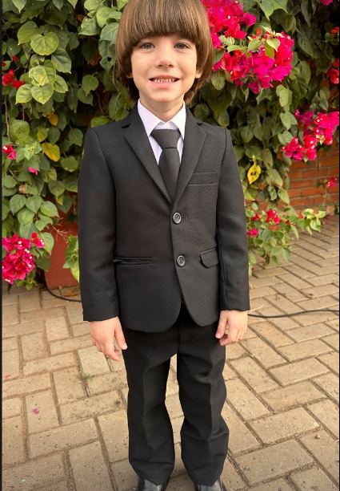
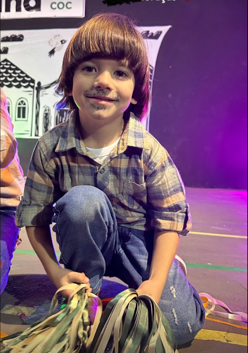
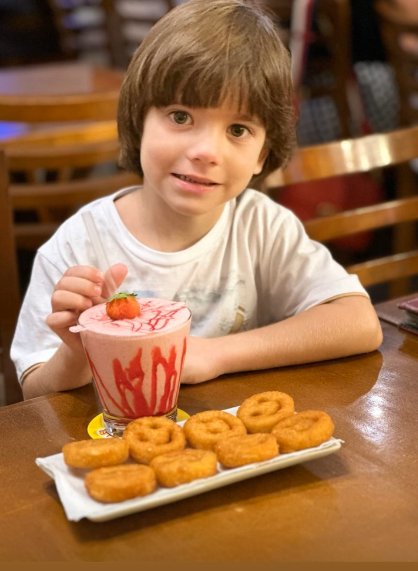
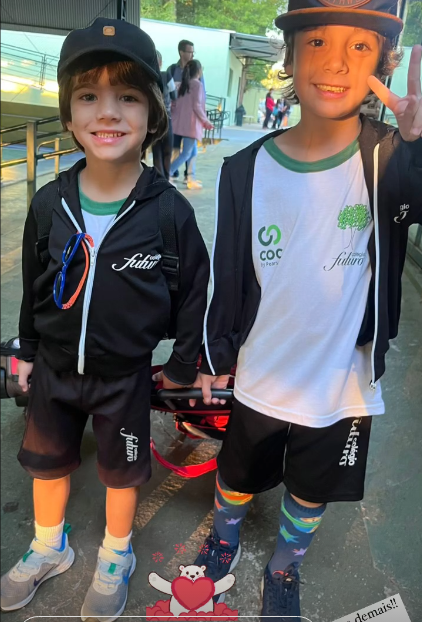

Eu curte acompanhar tanto natação quanto futebol, mesmo sem praticá-los. Além disso, gosta de pescar, praticar judô e frequentar a academia, o que mostra que você tem um interesse bem variado em esportes e atividades físicas. Essas atividades, junto com seu gosto por acompanhar competições, mostram um equilíbrio entre apreciar esportes de resistência, força e estratégia, e ao mesmo tempo estar envolvido em atividades que mantêm seu corpo em forma e ativo.